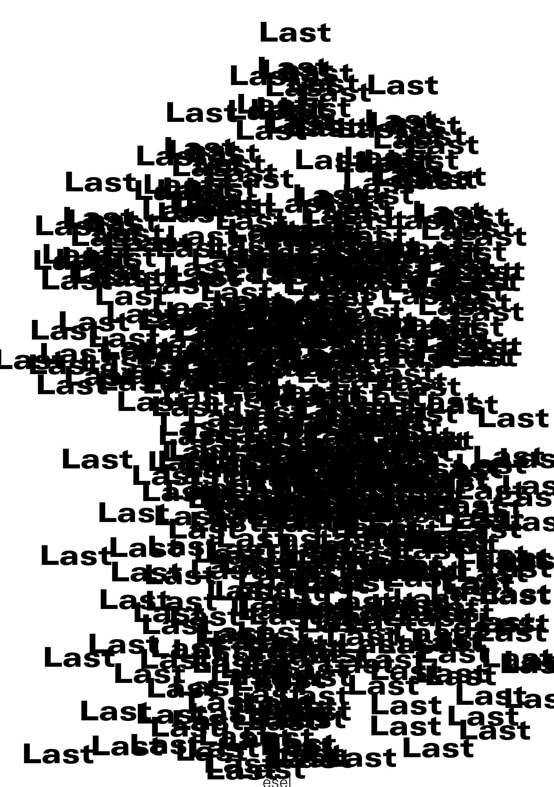
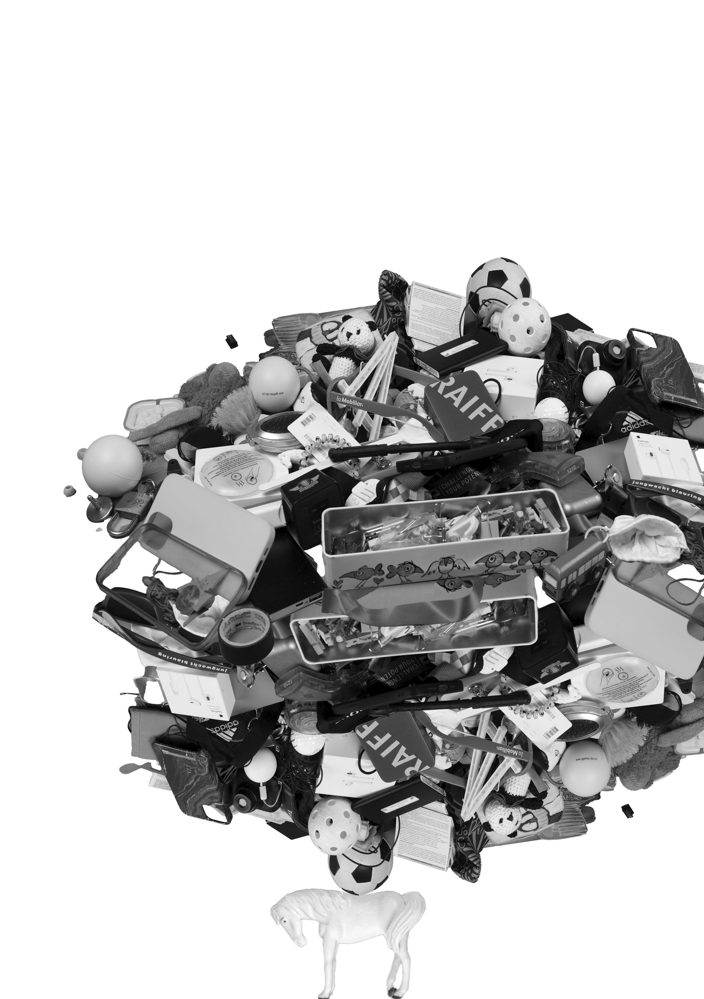
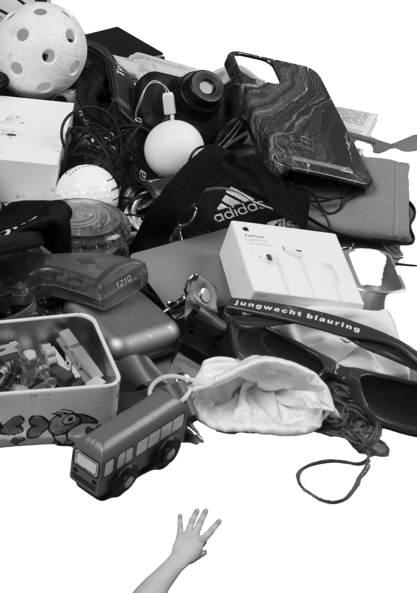
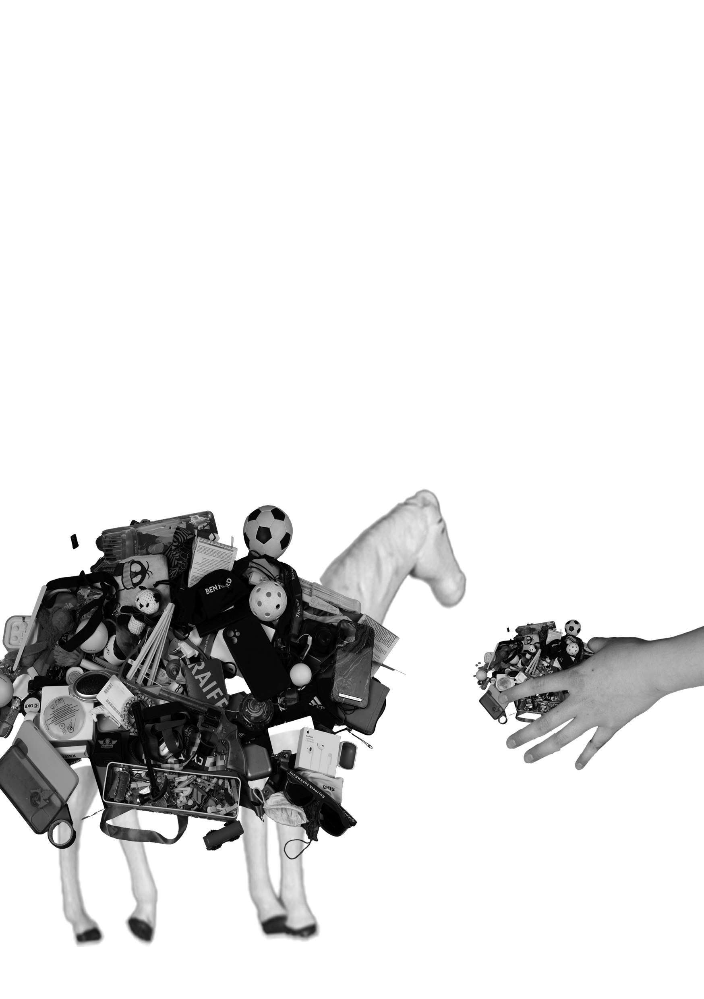
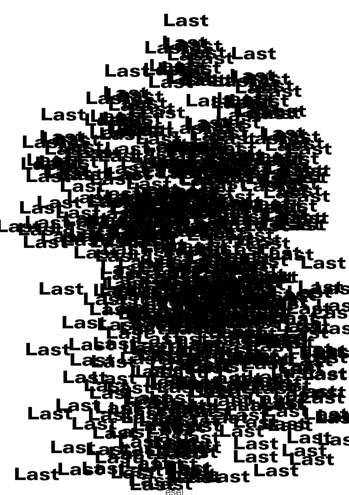
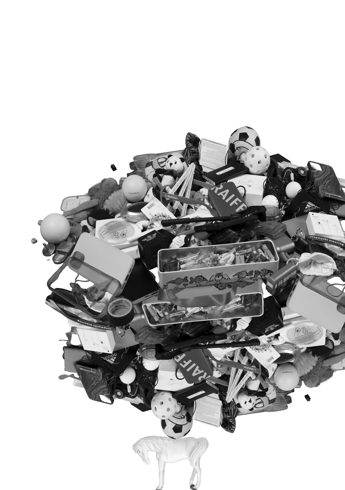
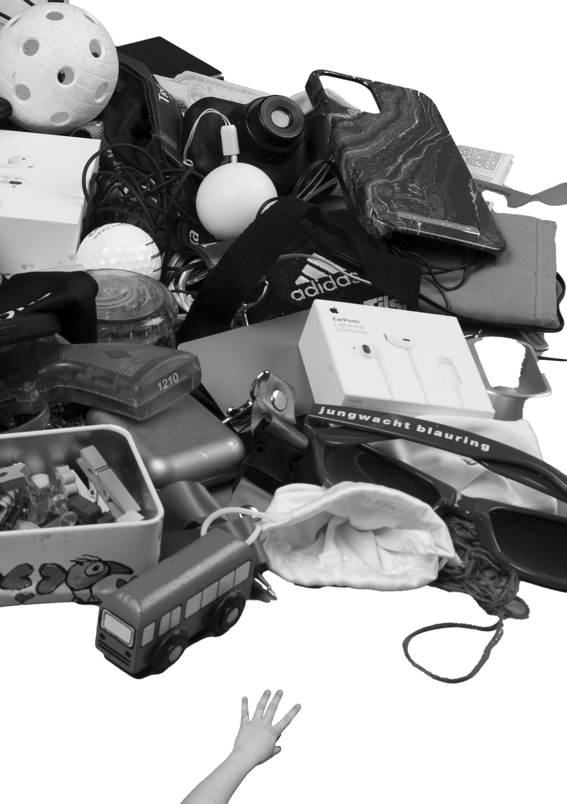
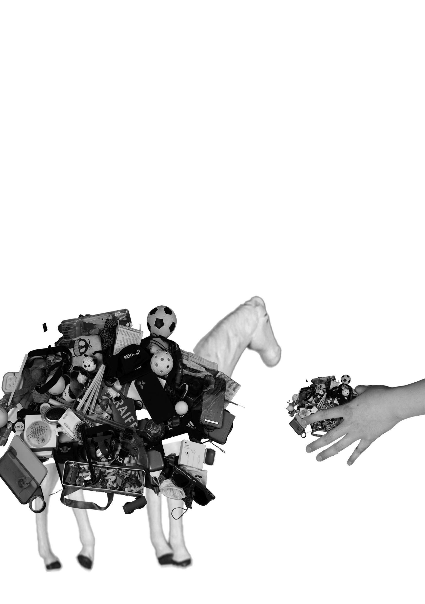

Wir kommen mit nichts auf die Welt und hinterlassen am Ende unzählige Dinge. Viele Gegenstände verlieren mit
der Zeit ihren materiellen Wert, werden verstaut und oft vergessen – wie Kuscheltiere in einem überfüllten
Plastiksack. Trotz des Vergessens bleibt eine emotionale Bindung, und das Loslassen fällt schwer.
Ist
das
Überkonsum oder schlicht die Notwendigkeit, Platz zu schaffen, weil Stauraum fehlt?
Mein Plakat
visualisiert
genau dieses Spannungsfeld zwischen Besitz, Erinnerungen und Ordnung.
Aus dem Auge, aus dem Sinn?
Blickwechsel Verschiebung
2025
POSTERDESIGN / FOTOGRAFIE / ANIMATION
Dozent*innen:
/ Martin Wootli
/ Felix Pfäffli
/ Valeria Bongini
/ Siiri Tännler
@ Fachklasse Grafik Luzern
2025
POSTERDESIGN / FOTOGRAFIE / ANIMATION
Dozent*innen:
/ Martin Wootli
/ Felix Pfäffli
/ Valeria Bongini
/ Siiri Tännler
@ Fachklasse Grafik Luzern


 






